LABHacker
LABHacker?
O LABHacker é o laboratório de inovação cidadã da Câmara dos Deputados e atua em três temas: transparência, participação e cidadania, com projetos colaborativos e experimentais. O laboratório também tem o objetivo de articular uma rede entre parlamentares, servidores públicos, hackers cívicos e sociedade civil que contribua para a cultura da transparência e da participação social por meio da gestão de dados públicos.
Nossos eixos
Participação
O LABHacker estimula o desenvolvimento de ações e ferramentas que ampliem a participação social no processo legislativo. É gestor do Portal e-Democracia da Câmara dos Deputados, que apresenta diversos modelos de participação, como interação em audiências, edição colaborativa de projetos de lei e debates temáticos. O e-Democracia também pode ser utilizado por outros órgãos e entidades.
Transparência
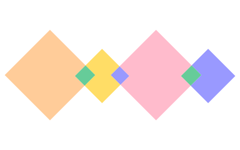Incentivamos o desenvolvimento de aplicações digitais que permitam a visualização mais intuitiva e simplificada das informações legislativas. Produzimos ferramentas em código aberto e as liberamos no github para aperfeiçoamento e uso do software sem custos por outros órgãos públicos. Implantamos colaborativamente o portal Parlamento Aberto, que inspira outras casas legislativas em vertentes de transparência, participação e controle social. Em 2018, a proposta é aumentar a compreensão dos cidadãos sobre as votações da Câmara, com experiências inovadoras nos bastidores do plenário.
Experimentação
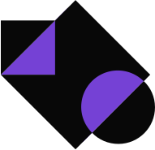O LABHacker é um espaço de liberdade para experimentos e aprendizagem, onde o erro é permitido em busca da inovação, do olhar fora do convencional. Aqui realizamos testes de usabilidade para produtos e serviços, sempre com foco no interesse do cidadão. Também experimentamos ferramentas e debatemos o uso de novas tecnologias para disseminar as melhores práticas.
Colaboração
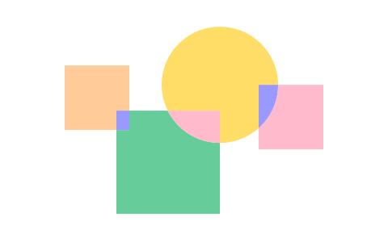O LABHacker trabalha em colaboração com uma rede de desenvolvedores e de ativistas cívicos, tanto para melhorar seus projetos e ferramentas quanto para ampliar a participação social e a transparência no Legislativo. O trabalho colaborativo está no planejamento inicial das atividades; na troca de informações e expertise; e na facilitação de processos para aumento da transparência e da participação.
Inspiração
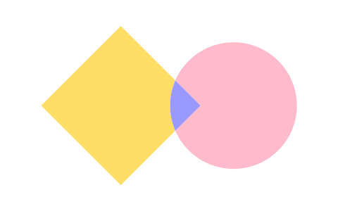Também realizamos eventos e atividades com especialistas e pessoas inspiradoras para trocar a cultura da burocracia e zona de conforto pela inovação no serviço público; disseminar casos de sucesso nas mais variadas áreas; além de falar sobre cidadania e tecnologia para diferentes públicos.
Mande sugestões, críticas ou ideias pra gente desenvolver 😉
labhacker@camara.leg.brO LABHacker é uma iniciativa da Câmara dos Deputados
Quem Somos
Walternor Brandão 🚓
Diretor - FC-03
Walternor é Analista Legislativo da Câmara dos Deputados e Mestre em Poder Legislativo pelo CEFOR - Câmara dos Deputados. Atualmente exerce as funções de Gestor do Portal e-Democracia da Câmara dos Deputados, colaborando para o desenvolvimento de tecnologias de participação popular e transparência pública.
Simone Ravazzolli 🐾
Gestora de comunicação e planejamento - FC-01
Simone é Analista Legislativo da Câmara desde 1998, onde desenvolve atividades nas áreas de comunicação, com ênfase em jornalismo digital, redes sociais, análise de dados de medição de audiência, e conteúdo multiplataforma. Trabalhou na criação da Coordenação de Participação Popular, área da Secom da Câmara responsável pelo levantamento de dados sobre participação social. Mestre pela UnB, possui MBA em Comunicação Estratégica e Competitiva nas Organizações pelo Instituto Científico de Ensino Superior e Pesquisa, e Master em Jornalismo Digital pelo Instituto internacional de Ciências Sociais – IICS/SP e Universidade de Navarra.
Roberta Rabay 🦋
Inovadora digital - FC-01
Roberta foi diretora do LABHacker de dezembro de 2017 a agosto de 2018. Ingressou na Câmara em 1999, trabalhou na área de Tecnologia da Informação, onde atuou em desenvolvimento de portais, experiência do usuário, comunicação interna e gestão de pessoas. Formou-se em Ciência da Computação pela UFPB e possui MBA em Governança de TIC. Está listada entre as 100 pessoas mais influentes em Governo Digital do Mundo de 2018 pelo Apolitical.
Diego Cavalcanti Cunha 🥕
Assessor para o Portal e-Democracia, Redator, Tradutor
Diego é Analista Legislativo e servidor público desde 2007, com passagem pelos ministérios da Cultura e de Relações Exteriores. Tem formação em Arquitetura e seu trabalho no LABHacker é variado, auxiliando na gestão do e-Democracia, na apresentação em eventos e também em traduções e pesquisas.
 Ricardo Fernandes 🤬
Analista Legislativo
Ricardo Fernandes 🤬
Analista Legislativo
Ricardo Fernandes Paixão é professor na Faculdade de Direito da UnB onde leciona disciplinas de empreendedorismo e regulação de inovação financeira (fintechs). Foi professor na USP e no PROVAR/LABFIN da Fundação Instituto de Administração. É doutor em administração pela FEA USP, MBA pelo INSEAD, mestrando em direito econômico pela USP São Francisco. No LABHacker trabalha com projeto de criação de um ecossistema de empreendedorismo cívico.
Thiago Nogueira ☕️
Desenvolvedor e administrador de sistemas
Thiago é estudante de Engenharia de Software na Universidade de Brasília. Pythonista e desenvolvedor backend no LabHacker. Gosta de transformar café em código, acredita que por meio da tecnologia possa mudar o mundo e as pessoas.
Erivânio Vasconcelos 💪
Desenvolvedor e administrador de sistemas
Erivânio é desenvolvedor do LABHacker. Tem formação em Análise e Desenvolvimento de Sistemas pelo IFPI e atua no LABHacker na criação e manutenção de projetos e administração de servidores.
João Victor Maciel 🚀
Designer Multimídia
Joã1 ou João Victor para os mais sérios, é criativo radicado em Comunicação na UnB e apaixonado por café e reggaeton. Atua no LAB como Designer Multimidia unindo aprendizados adquiridos pelos mais diferentes cantos do mundo, como Japão e Colômbia, e skills de comunicação, publicidade, design, produção e audiovisual.
Taiane Jacobina 👜
Documentadora Operadora Micro Sênior
Tai atua no LABHacker como assistente administrativa e supervisora das atividades hackers. É estudante de Direito, tem curso na área de coaching e relações inteligentes e influenciadora digital.
Amanda Dimes 🦒
Estagiária de Comunicação
Amanda é estagiária de comunicação do LABHacker. É estudante de Comunicação Organizacional na UnB e atua com planejamento e o desenvolvimento de ideias que tenham impacto social de forma criativa.
Júlia Abreu 👧
Pró-adolescente
Júlia é estudante do ensino médio e pró-adolescente da Câmara dos Deputados. No LABHacker, auxilia nas atividades hackers e nos eventos.
Nossas Atividades
Confira alguns exemplos do que a gente faz por aqui para ajudar no aprimoramento da transparência legislativa e da participação social no Parlamento:
Participação em audiências interativas
Além de acompanhar ao vivo as audiências públicas das comissões da Câmara, agora também é possível encaminhar perguntas sobre o tema do debate pela ferramenta Audiências Interativas do e-Democracia, desenvolvida pelo LABHacker. As perguntas mais votadas pelos próprios cidadãos são lidas e respondidas ao vivo durante o evento pelos deputados ou convidados. As respostas são marcadas no vídeo e, a qualquer tempo, é possível buscar a sala da audiência para ter acesso à integra do vídeo e às perguntas realizadas e respectivas respostas. Também há um espaço de bate-papo para interação entre os usuários durante o evento.
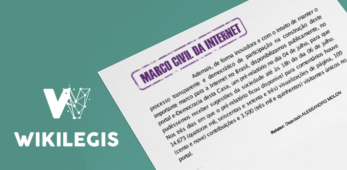
Edição colaborativa de projetos
O Wikilegis é uma ferramenta do e-Democracia desenvolvida pelo LABHacker que permite aos cidadãos a participação ativa na construção dos textos de leis com os deputados relatores dos projetos. As pessoas interessadas no tema podem encaminhar sugestões de mudanças no texto, artigo por artigo; fazer comentários; e ainda apoiar ou rejeitar integralmente, ou em partes, a proposta. As contribuições coletivas são apresentadas de forma organizada e estruturada, facilitando a análise e possível incorporação ao texto final pelo relator. Por meio dessa funcionalidade, milhares de internautas contribuíram para a redação de leis como o Código de Processo Civil; o Marco Civil da Internet; o Estatuto da Pessoa com Deficiência; e o Estatuto da Juventude, entre outras.
Inclusão de temas na pauta da Câmara
Uma das ferramentas do e-Democracia, a Pauta Participativa foi desenvolvida em 2017 para os cidadãos poderem ajudar na elaboração da pauta, escolhendo, para análise do Plenário, as propostas que acham prioritárias. O projeto-piloto foi realizado em setembro e contou com 7.585 participantes, que votaram em proposições nas áreas de saúde, segurança e política. Todo o processo foi acompanhado e avaliado por especialistas em ações de participação social. A documentação desse trabalho, incluindo a avaliação dos cidadãos participantes e informações sobre a metodologia utilizada (D21), está disponível na página.
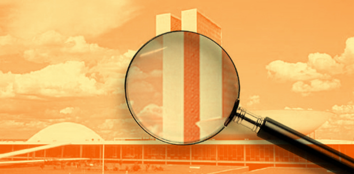
Abertura do Parlamento
O Laboratório Hacker, em parceria com as casas legislativas e instituições da sociedade civil, coordena o compromisso 11 do 3º Plano de Ação do Brasil junto à OGP. Como um dos marcos desse compromisso, o grupo construiu, de maneira colaborativa e aberta, o Guia para um Parlamento Aberto, para orientar, de forma prática, as vertentes de transparência, participação social e controle social no Parlamento. Outros marcos do compromisso são a construção do Portal Parlamento Aberto - com normas, ferramentas, capacitações, guias e práticas de Parlamento Aberto -, e a disponibilização do e-Democracia entre as plataformas oferecidas pelo programa Interlegis para difundir o uso da ferramenta por todas as casas legislativas do País.
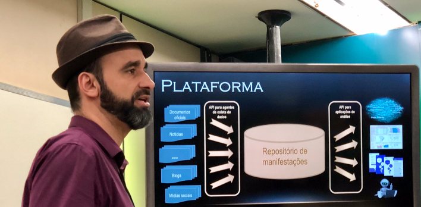
Análise de manifestações políticas
O LABHacker trabalha no desenvolvimento de uma plataforma que facilitará a análise sobre manifestações políticas. Esse repositório colaborativo, chamado de Babel, terá informações vindas de redes sociais, pronunciamentos, publicações oficiais, notícias, blogs e outras entradas. Isso possibilitará que softwares e analistas de dados possam cruzar essas informações e compreender o posicionamento de qualquer pessoa ou instituição sobre temas políticos.
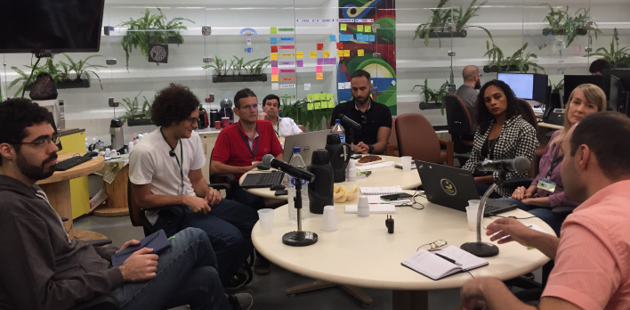
Estudos colaborativos em mídias sociais
O LABHacker estimula a criação de grupos de estudo multidisciplinares e com participantes de vários órgãos públicos para aprofundar o debate e disseminar as boas práticas sobre temas relacionados a mídias sociais e análise de redes. Esses estudos são realizados quinzenalmente e transmitidos ao vivo pelo Youtube, para que todos os interessados possam participar ou ter acesso posterior ao debate.
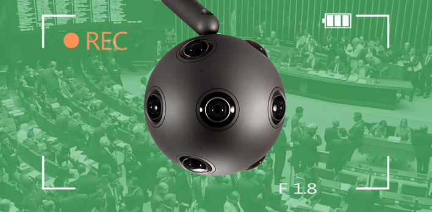
Experimentos de transparência imersiva
Uma das novidades do LAB é o experimento 360 graus, em que o cidadão pode acompanhar, de dentro do plenário da Câmara, a votação de alguma proposta importante para a sociedade. O LABHacker acredita que projetos como esse são fundamentais para aumentar a transparência do Parlamento e facilitar a compreensão da sociedade sobre o processo legislativo.
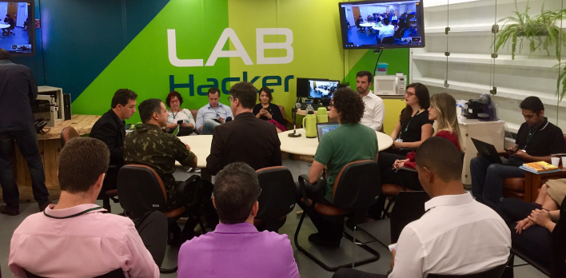
Debates provocativos
Realizamos palestras sobre temas desafiadores, como novas tecnologias e inovação no serviço público, para estimular servidores, funcionários, parlamentares, hackers cívicos, estudantes e demais interessados. A pauta desses debates é sempre divulgada em todas as redes sociais do LABHacker e as apresentações são transmitidas ao vivo pelo YouTube.
Disseminação da cultura de participação social
Parceria entre Câmara, Senado e Interlegis em 2018 agora possibilita que o portal e-Democracia, plataforma de participação social desenvolvida pelo LABHacker, seja distribuído para Câmaras Legislativas e Assembleias de todo o País. O primeiro município a utilizar a plataforma para seus cidadãos é Três Corações, em Minas Gerais.
Em Brasília, a Câmara Legislativa do Distrito Federal, a Anvisa e a Anac já trabalham na plataforma. Em abril, o Parlamento Francês informou seu interesse pelo e-Democracia. Essa transferência de tecnologia deverá abrir caminho para que outros países passem a usar a ferramenta de participação social, que é gratuita e modulável.
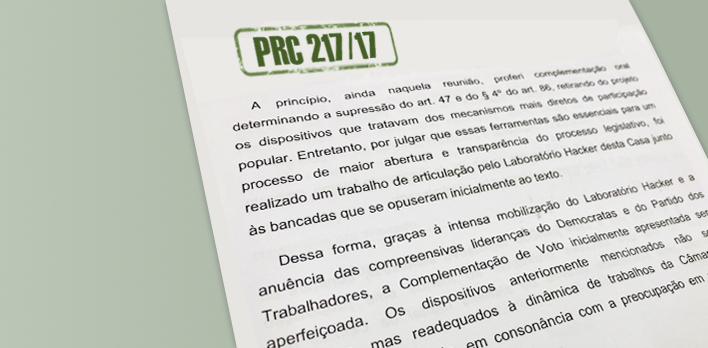
Assessoria para institucionalização de inovações cívicas
O LABHacker iniciou o debate para a criação do Projeto de Lei de Iniciativa Popular Digital (PL 7574/17), que facilita a vida do cidadão e a participação social ao permitir o encaminhamento de abaixo-assinados da população, por meio eletrônico, para o recebimento de propostas de iniciativa popular. Esse debate, que incluiu desde a possibilidade de uso da tecnologia Blockchain no processo legislativo à checagem de dados dos cidadãos por meio do banco de dados do Tribunal Superior Eleitoral (TSE) e outras questões técnicas, contou com a participação fundamental de consultores da Câmara, parlamentares e especialistas. Agora o projeto já está pronto para ser votado pelo Plenário da Casa.
Outra proposição que contou com o assessoramento do LABHacker foi o PRC 217/2017, que institucionaliza a participação cidadã e amplia a transparência do processo legislativo na Câmara dos Deputados.
Nos Acompanhe
Provocando